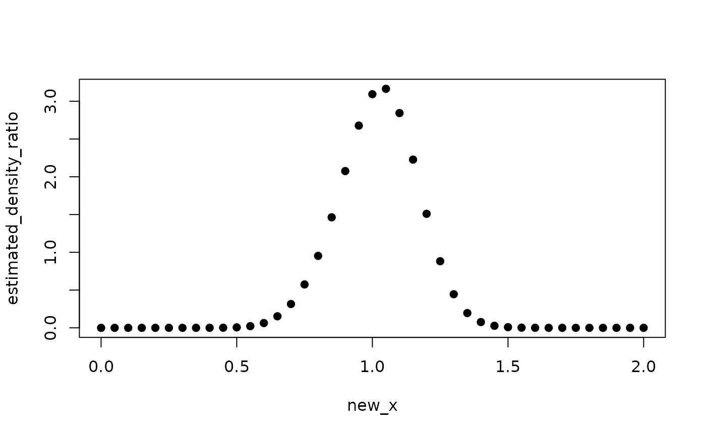

Estimate Density Ratio p(x)/q(x)
Usage
densratio(
x1,
x2,
method = c("uLSIF", "RuLSIF", "KLIEP"),
sigma = "auto",
lambda = "auto",
alpha = 0.1,
kernel_num = 100,
fold = 5,
verbose = TRUE
)Arguments
- x1
numeric vector or matrix. Data from a numerator distribution p(x).
- x2
numeric vector or matrix. Data from a denominator distribution q(x).
- method
"uLSIF" (default), "RuLSIF", or "KLIEP".
- sigma
positive numeric vector. Search range of Gaussian kernel bandwidth.
- lambda
positive numeric vector. Search range of regularization parameter for uLSIF and RuLSIF.
- alpha
numeric in [0, 1]. Relative parameter for RuLSIF. Default 0.1.
- kernel_num
positive integer. Number of kernels.
- fold
positive integer. Numer of the folds of cross validation for KLIEP.
- verbose
logical (default TRUE).
Examples
x1 <- rnorm(200, mean = 1, sd = 1/8)
x2 <- rnorm(200, mean = 1, sd = 1/2)
densratio_obj <- densratio(x1, x2)
#> ################## Start RuLSIF ##################
#> Searching optimal sigma and lambda...
#> sigma = 0.001, lambda = 0.001, score = 15.067
#> sigma = 0.001, lambda = 0.003, score = 0.247
#> sigma = 0.001, lambda = 0.010, score = -0.550
#> sigma = 0.003, lambda = 0.010, score = -1.048
#> sigma = 0.010, lambda = 0.032, score = -1.118
#> sigma = 0.032, lambda = 0.316, score = -1.138
#> sigma = 0.100, lambda = 0.032, score = -1.157
#> sigma = 0.100, lambda = 0.100, score = -1.186
#> sigma = 0.100, lambda = 0.316, score = -1.207
#> sigma = 0.100, lambda = 1.000, score = -1.224
#> Found optimal sigma = 0.100, lambda = 1.000.
#> Optimizing kernel weights...
#> End.
#> ################## Finished RuLSIF ###############
new_x <- seq(0, 2, by = 0.05)
estimated_density_ratio <- densratio_obj$compute_density_ratio(new_x)
plot(new_x, estimated_density_ratio, pch=19)
